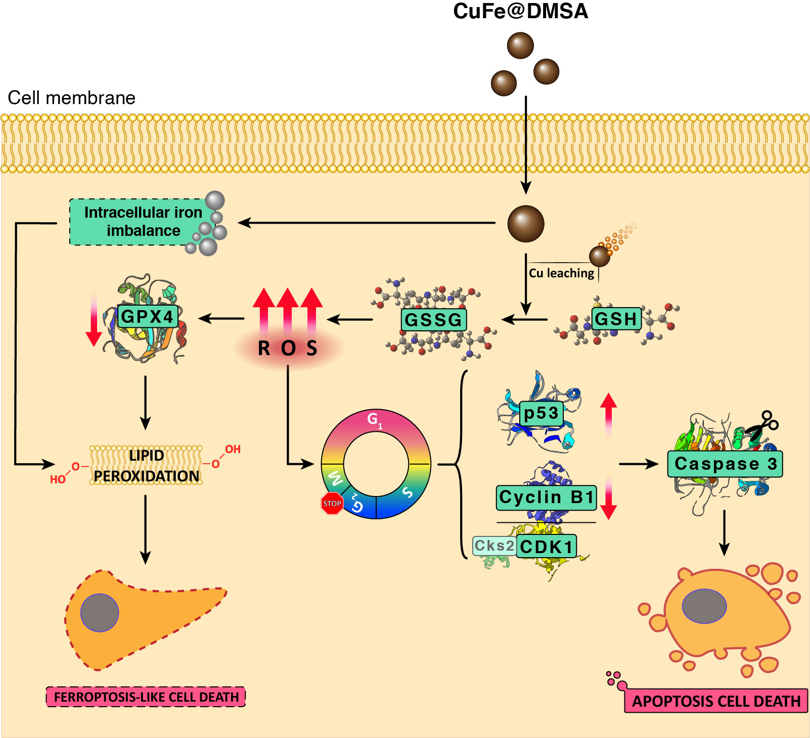
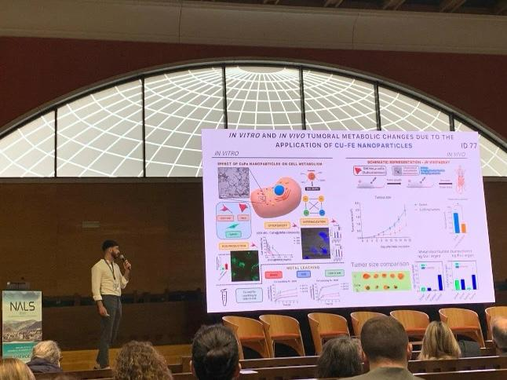
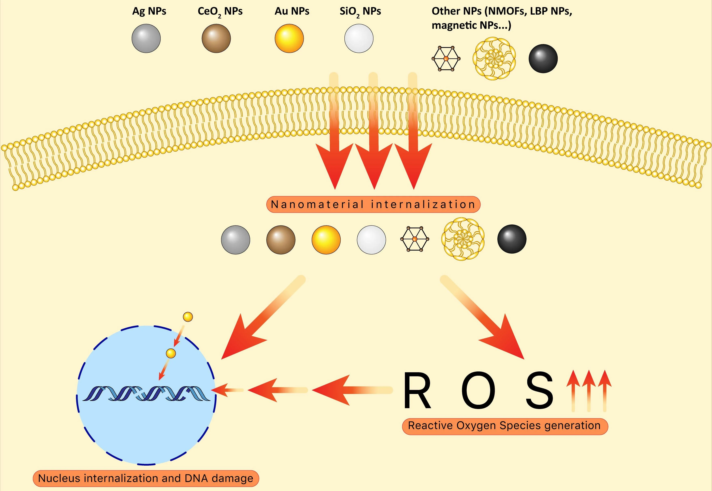

Technical & Professional Skills
10
Scientific articles
(Q1 journals)
3
International collaborations
5+ years
Results presentation
5+ years
Generation of scientific insights
4
Scientific conferences
IBM
Data Science Professional Certificate
Relevant Projects | Scientific Background
Inorganic NPs for cancer treatment

Generation of scientific insights
Study of the biological effects of Cu- and Fe-based nanoparticles as antitumoral therapy, which led to the publication of several scientific articles in Q1 journal. This collaborative work led me to strengthen several skills that are useful in a translational role, like working in an interdisciplinary team, generating scientific insights and solving problems based on data and evidence. Project summary | Article link - Nanoscale
Oral presentation in international scientific conference

Presentation (English spoken) of the main results generated up to that point in my doctoral thesis to an expert, multidisciplinary audience. This opportunity allowed me to improvemy public speaking skills in front of a large audience, as well as to effectively communicate the key insights of my work within a limited amount of time. Confrence: Nanomaterials Applied to Life Science, 2022 (Santander, Cantabria).
Scientific review

Reviewing and synthesizing scientific information
Writing, design and formatting a scientific review about the principal interactions of nanoparticles with nucleic acids. This work required searching, understanding, and synthesizing a large amount of information from multiple sources. Project summary | Article link - IJMS
Hobbies & Interests
🏀 Playing basketball
After 20+ years playing this sport, basketball has provided me with many qualities that I still carry with me today, such as teamwork, leadership, discipline, dedication, resilience and passion for sports. These qualities led my to win 2 individual prizes, also leading my team to be champions of the league. I also obtained the Certification of Basketball Trainer (Level I), spending one year as Assistant Trainer in the sports club where I played, learning the management of a team and leading our team to the league victory.
👟 Practicing other sports
During the last years, I had the opportunity to practice and enjoy different sports and activities, such as padel and mountain hiking, still practicing them occasionally. In addition, I also enjoy running regularly, with the current objective of improving my running time in 5K races, following a training planning.
📚 Reading
Reading books has always been one of my favorite activities, serving as a space for relaxation and reflection. My preferences have changed over the years, reading either novels or essays, yet there are some genres that I particularly enjoy the most, such as epic fantasy and personal development. I am also a huge fan of comics, manga and graphic novels.
✈️Travelling
I have always thought that visiting other cities or countries, and **experiencing other cultures** is a really enriching experience. Also, I am the kind of person that enjoys **planning trips,** having organized trips to many places in Spain, as well as to different countries such as **France**, **Germany**, **Austria** and **EEUU**. During my **Erasmus+ programme**, I also travelled to a wide variety of different places in **Italy**, **diving into** and enjoying the **culture** of that country.